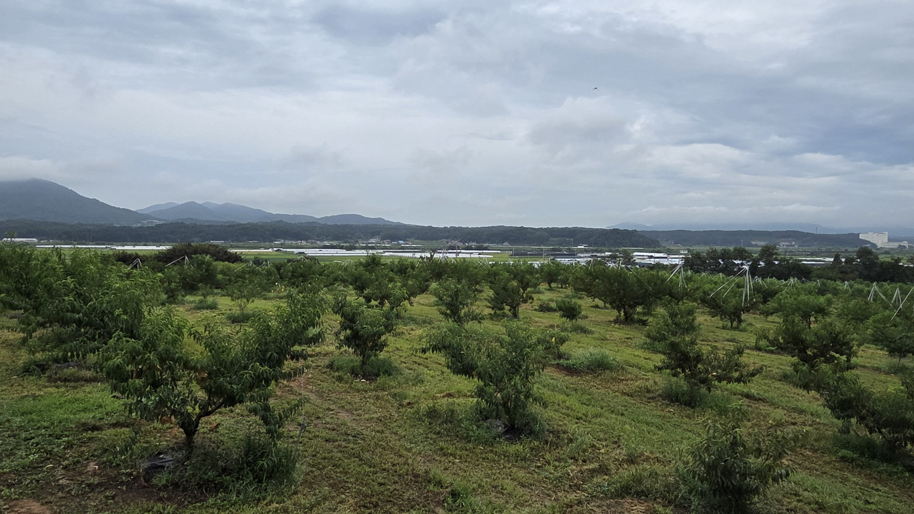
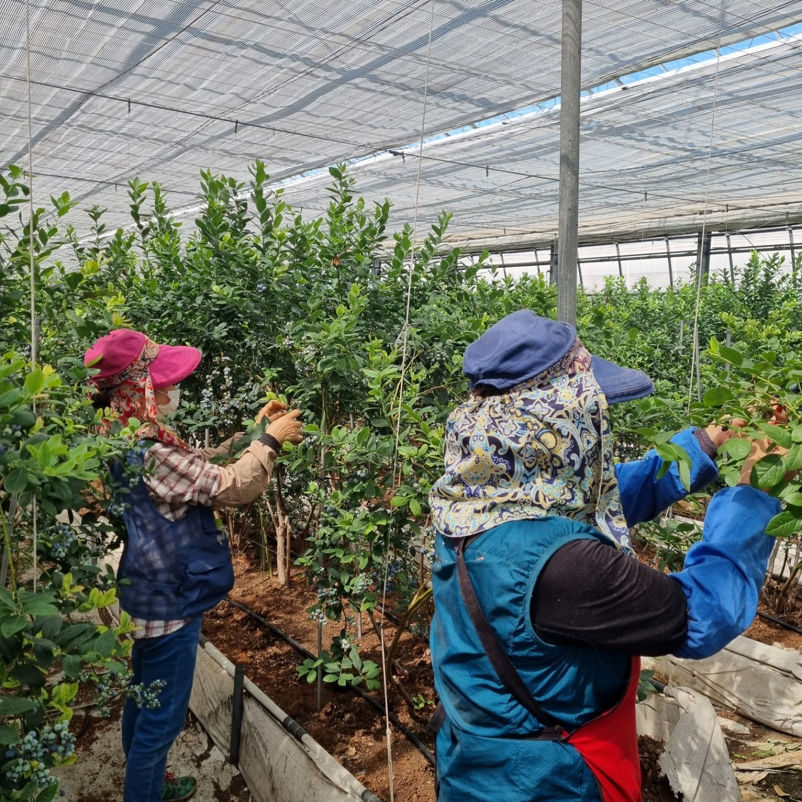
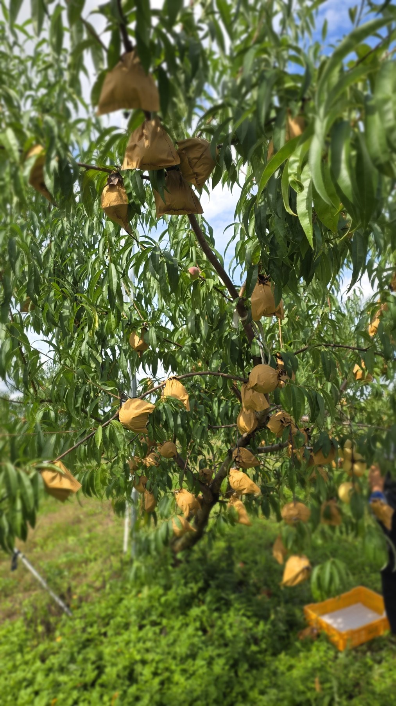

건강한 일상을 위해,
농업의 가능성을 연구합니다.
직접 기르는 농업에서 버섯의 유효성분 발굴과 식품 소재화까지.
영글어농장은 생산 현장의 경험을 연구로 이어갑니다.
원물을 기르는 일에서,
원물의 가치를 발견하는 일로.
2008년 농업에서 시작한 영글어농장은 재배와 유통을 거쳐 가공·버섯 배양·연구로 사업을 넓혔습니다. 직접 생산하는 기반 위에서 성분을 이해하고 식품으로 활용할 수 있는 가치를 찾습니다.
직접 기르는 원물
블루베리·복숭아 재배와 버섯 생산 경험을 축적합니다.
배양과 가공
현미 기반 균사체 배양, 동결건조·분쇄·농축 역량을 연결합니다.
유효성분의 발견
버섯 유래 성분을 분석하고 원료의 특성을 살핍니다.
식품 소재화
원료 규격과 가공 조건을 검토해 식품으로 활용할 방법을 개발합니다.
농장과 함께 쌓아온 시간.
새로운 사업의 출발점마다 실제 재배 현장과 생산 시설, 연구 조직을 마련해 왔습니다.
농업에서 시작
제1 유리온실과 함께 재배 사업을 시작했습니다.
가공 기반 구축
농산물을 다양한 식품으로 연결할 가공공장을 설립했습니다.
연구소 설립
기업부설 연구소를 설립해 연구 기반을 갖췄습니다.
버섯 재배 시설 준공
버섯 재배와 가공 인프라를 확장했습니다.
식품 소재 연구
균사체 배양과 성분 분석을 식품 소재화로 이어갑니다.

농업의 경험을 받치는
네 가지 운영 기반.
화순·이천의 농장, 화순의 버섯 재배 시설과 HACCP 가공공장, 대전의 선별·물류센터가 하나의 운영 체계를 이룹니다.
원료 생산부터 배양·가공·제품화·유통까지 연결하며, 생산 현장의 지식을 연구와 개발에 축적합니다.
생산 인프라 자세히 보기농장·스마트팜
재배의 기반유리온실과 노지에서 블루베리·복숭아를 재배합니다.
HACCP 가공공장
518㎡동결건조, 초미립 분쇄, 액상 농축 설비를 갖추고 있습니다.
버섯 재배 시설
1,504㎡약용버섯 생산과 균사체 고체발효를 위한 기반입니다.
선별·물류센터
986㎡과실 선별과 중부권 유통·배송을 연결합니다.
농장과 작업 공간에서
이어지는 생산의 과정.
과수원과 온실의 재배·수확, 선별 공간과 포장 준비 모습을 통해 원물이 생산되고 공급을 준비하는 현장을 소개합니다.

과수원 전경
재배지가 펼쳐진 실제 농장 모습입니다.

유리온실 재배·수확
온실에서 자란 블루베리를 직접 수확합니다.

복숭아 재배 현장
나무에서 자라는 과실의 모습입니다.

선별·취급 공간
실내 작업 공간에서 과실 취급을 준비합니다.

과실 보호 포장
완충재에 과실을 담아 포장합니다.

과실 상태 확인
측정 기기를 이용해 과실을 살핍니다.
재배·가공·연구가
같은 흐름 안에 있습니다.
농업의 현장 경험, 원료를 가공하는 설비, 현미 기반 균사체 배양 기술이 서로 연결되어 있습니다.
생산에서 출발하는 연구
과일과 버섯을 직접 생산하며 얻은 경험으로 원료의 특성과 가공 가능성을 탐구합니다.
현미 고체발효 기술
현미 기반 약용버섯 균사체 배양 기술을 바탕으로 버섯 식품과 소재 개발을 이어갑니다.
성분 분석과 표준화
코디세핀·베타글루칸·에리나신 A 분석을 통해 원료를 수치와 규격으로 이해하는 방향을 추구합니다.

성분의 발견을
일상 속 식품으로 연결합니다.
상황버섯, 동충하초와 노루궁뎅이버섯의 배양 경험에서 출발해 유효성분의 특성을 연구합니다.
건강을 향한 관심을 원료 연구와 가공·제품 개발로 구체화하고, 향후 기능성 원료로 확장할 기반을 쌓습니다.
연구와 식품 소재화 살펴보기건강 · 발견 · 식품 소재화
농업에서 얻은 가능성을 연구하고, 사람들의 일상에 닿는 식품의 가치로 이어가는 것이 영글어농장의 방향입니다.
일상을 생각하는 개발
사람들의 건강한 일상을 지향하며 농업과 식품의 역할을 고민합니다.
성분을 이해하는 연구
원물의 형태를 넘어 그 안에 담긴 성분과 특성을 탐구합니다.
쓸 수 있는 가치로 구현
생산·가공·분석의 경험을 식품 소재와 제품 개발로 연결합니다.
제품은 이 여정의 결과입니다.
과일과 버섯의 재배·가공·개발 경험이 어떤 제품으로 이어졌는지 한 페이지에서 소개합니다.